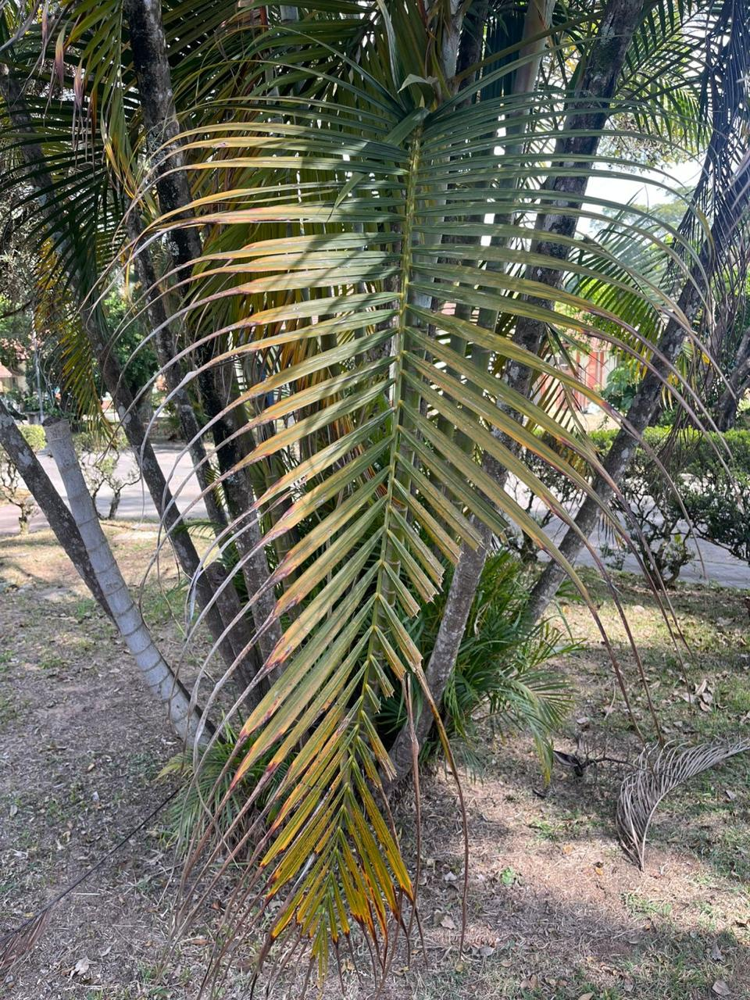

Areca-bambú
Dypsis lutescens

Informações Botânicas
Nome Científico:
Dypsis lutescens
Família:
Palmae
Origem:
Madagascar
Descrição:
Palmeira de 3 a 6 metros de altura que cresce formando touceiras, com múltiplos troncos finos e anelados que lembram bambu. Suas folhas são longas, em formato de pena (pinadas) e elegantemente arqueadas, criando um visual cheio e tropical. As flores e pequenos frutos que produz não possuem grande valor ornamental. Em locais com sol pleno, sua folhagem tende a ficar com uma coloração mais verde-amarelada.
Localização no Jardim:
Extremamente versátil, é a palmeira mais cultivada no Brasil. Pode ser usada em vasos para decorar ambientes internos, ou plantada no jardim, isoladamente ou em grupos, funcionando bem tanto a pleno sol quanto à meia-sombra.
Características Especiais:
- A Palmeira Mais Popular do Brasil É a espécie de palmeira mais cultivada e comercializada no país, pela sua beleza e versatilidade.
- Aparência de Bambu Cresce em touceiras com vários caules finos, o que lhe confere o nome e a aparência de bambu.
- Uso Dentro e Fora de Casa Adapta-se muito bem a ambientes internos (em vasos) e externos (no solo).
- Folhas Douradas no Sol Quando cultivada sob sol pleno, sua folhagem adquire um tom verde-amarelado característico.
- Fácil de TransplantarSuporta transplantes com facilidade, mesmo quando já está adulta, sendo prática para o paisagismo.